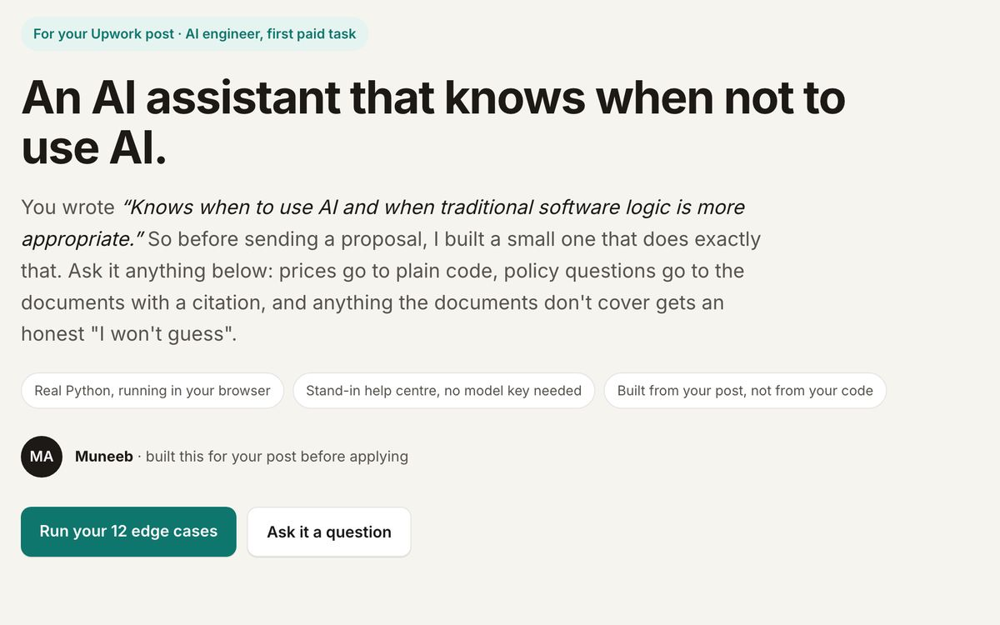
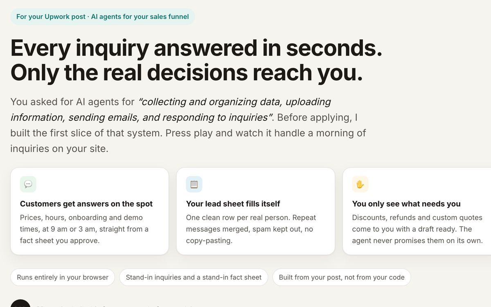
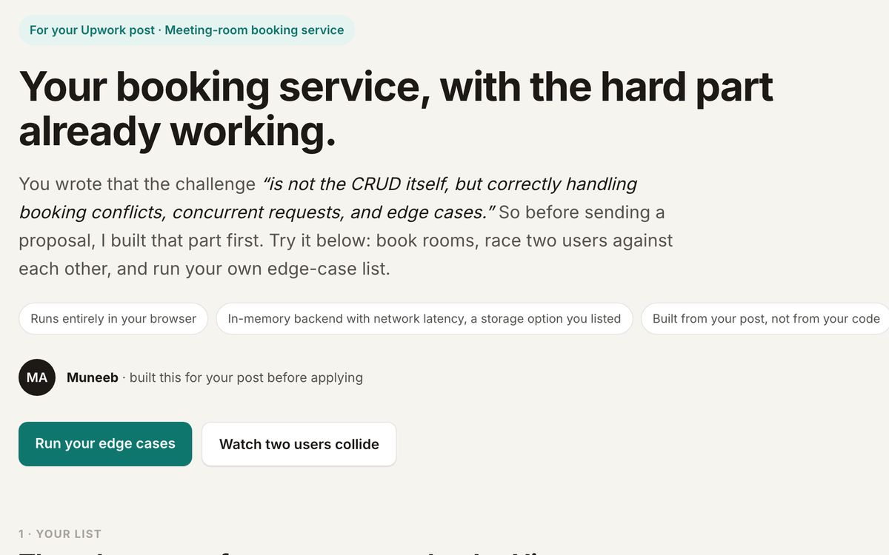

Available, 30+ hrs/weekAI engineerLahore · UTC+5
I fix support chatbots that give customers wrong answers.
This page has one too. It's an AI version of me that answers only from my notes, checks every sentence against them before you see it, and tells you when it doesn't know. Ask it about my work, or try to make it say something that isn't true.
- AI version of me
- Answers only from my notes
- Says no to everything else
01 · Ask me
Talk to the AI version of me
It answers from 80 notes I wrote about my work. Every sentence is checked against the note it cites, and if a check fails you get the note itself, word for word. Nothing you type is stored.
Hi, I'm the AI version of Muneeb. Ask me about my experiments, my demos, how I'd fix your chatbot, what I charge or when I'm available. I only answer from my notes, so if something isn't there, I'll say so.
An AI version of me, not me typing. For anything it can't answer, message the real me on Upwork.
02 · Measured, not claimed
Thirteen experiments on one RAG pipeline
Each one asks a question that can be answered with a number and records the answer it actually got. Five of the thirteen disproved what I set out to prove. Those stayed in.
One harness, 2,183 lines. A 50-question golden set, 5 trap questions the corpus cannot answer, an LLM judge with a faithfulness gate, a CI gate that exits non-zero, Langfuse tracing. Every table in every write-up came out of it.
The repository →trap runs hallucinated, before and after a better prompt. Groundedness 66.9% → 95.6%.
Write-up →runs that obeyed 1,820 bytes of hostile text (0.255% of the corpus), before and after the defence.
Write-up →landed attacks caught by forcing citations. Segregating the judge took wrongly punished answers from 4 to 0.
Write-up →MRR gain from an encoder swap, at n=20 and again at n=50. Below my noise bar, so I withdrew the conclusion.
Write-up →per query, 2.1 s mean latency, measured per request.
Write-up →of my preregistered hypotheses. It fired on 2 of 20 questions at 1.32× cost: ship it behind a trigger.
Write-up →on a kill -9 with durability set to async. Setting it to sync fixes it.
Write-up →compliance and contamination from a poisoned tool description, on a server built to the 2026-07-28 spec.
Write-up →traps abstained and false abstentions; the one false abstention traced to a single chunk in 734.
Write-up →the target chunk's rank after heading-aware splitting. Cleaner chunks helped 66 competitors more.
Write-up →misses rescued by a cross encoder. The other stayed a miss at every pool size from 5 to 30.
Write-up →the saving at which a small-model fine-tune pays back in days. Four scenarios, knowledge versus behaviour.
Write-up →Reading the retrieved chunks turned a coverage problem into a ranking problem.
Write-up →03 · Built before applying
Three demos you can run
Each was built from a job post before I applied, with stand-in data, so the client could try the hard part of their own project first.

Prices go to plain code, policy questions go to the documents with a citation, and anything the documents don't cover gets an honest "I won't guess". Real Python, running in your browser.
12/12 edge cases with safeguards · 4/12 withoutOpen the demo →
Answers customers from an approved fact sheet, fills a lead sheet, and routes discounts, refunds and custom quotes to the owner with a draft ready. Press play on a morning of 12 inquiries.
approval routing is plain code in front of the modelOpen the demo →
Two people press Book at the same moment. Switch between the usual first version and mine, and watch the race. In Postgres, the database itself refuses the overlap.
5 edge cases checked liveOpen the demo →04 · How I work
Measure, fix the biggest cause, measure again
None of the failures in my repository were found by reading code. They were found by building something that produces a number, then trying to make the number move.
The failure, with a test set built from your real questions, not toy examples.
Before touching anything: answer accuracy, faithfulness to your documents, cost per query.
Retrieval, chunking, prompts, tool calls or guardrails. The root cause, not the symptom.
The same tests, the numbers handed over, and tracing so you can see what the model does after I'm gone.
I take 20 to 30 of your real customer questions, count how many come back wrong today, fix the biggest cause, and run the same questions again. The number tells you it's done, not me.
05 · Experience
Four years of production Python, then AI
- Sep 2025 – nowData Scientist · Leading IT Middle East
Production AI and machine-learning work for energy and financial-services clients: forecasting, classification and reinforcement-learning systems, with MLflow pipelines for experiment tracking and controlled deployment.
- Jan 2025 – Aug 2025AI Engineer · Comlink Total Solutions
Led engineering and product decisions for an AI image-generation web application, from concept through production release and beta-driven iteration.
- May 2024 – Dec 2024AI Engineer · Offshore Employee
Contributed to an IBM watsonx enterprise chatbot, built a location-partitioned RAG solution for a legal team, and shipped GenAI and computer-vision services with LangChain, ChromaDB, Flask, Docker and AWS.
- Oct 2022 – Apr 2024Machine Learning Engineer · Dubizzle Labs
Built a containerized model-serving platform with gRPC and Kafka, turning isolated models into a horizontally scalable production service; deployed computer vision on GCP and Azure.
- Sep 2021 – Sep 2022Python Developer · ArhamSoft
Built and deployed a FastAPI REST server with 30+ production endpoints, containerized with Docker, with GitHub Actions CI/CD to AWS EC2.
A fleet-insurance CRM
Xero integration (OAuth, invoice sync, unmatched invoices surfaced instead of guessed), role-based access with route guards, the accident report flow, claim PDFs. Next.js 15, React 19, TypeScript. 50 commits, 211 tests passing.
Education
BS in Computer Science, National University of Computer and Emerging Sciences (FAST-NUCES).
Stack
Languages
English (fluent), Urdu (native).
06 · Work with me
Ways to start
Everything runs through Upwork: messages, calls and contracts. I usually start with a fixed-price diagnostic and a written report, and you keep the report whether or not you hire me for the fix.
Hourly
Time tracker on. For a defined job I quote one fixed price, usually in milestones.
Consultation
A 30-minute video call, booked from my Upwork profile, to look at your problem together.
Reliability diagnostic
A written diagnostic of your LLM, RAG or agent app.
- $95One failure reproduced and explained, 1–2 pages, 2 days.
- $240Up to 8 failures across the request path, a ranked 6–10 page report, 30-minute call, 3 days.
- $480Plus an evaluation set of 25–50 real questions, a scoring script, and the top fix re-measured, 7 days.
Prompt-injection test
Your RAG or agent tested against your own content, with the numbers.
- $120A threat model and one working indirect injection, 3 days.
- $3206+ payloads over multiple runs, a measured obedience rate, your guardrail audited, 5 days.
- $640Plus the defence implemented and the suite re-run, before and after, 10 days.
What I don't take: no-code agent builders (GoHighLevel, n8n, Zapier, Voiceflow), voice-AI telephony, mobile-first apps. I'd be learning on your time.
07 · For your developer
How this chat is built, and how it was tested
A static page, a free Cloudflare Worker, an open 8B model and $0 a month. The guardrails are code you can read.
The layers, in order
- Bot check. One single-use Cloudflare Turnstile token per question, bound to the question's hash, so a token can't be replayed or reused for another question.
- Rules. Length, encoded payloads, other languages, contact requests, role changes, personal and off-topic questions, all deterministic.
- Topic gate. The question is embedded with bge-small-en-v1.5 and compared with labelled example questions, and with the notes themselves: too far from both means "not in my notes".
- Retrieval. BM25 and cosine similarity over 80 notes, fused by rank. The Worker retrieves for itself; nothing the page sends can choose the notes.
- Quota. A Durable Object counts turns that reach the model, per day, per hour and per network. If it's unavailable, the chat answers from notes only.
- Injection classifier. Llama Prompt Guard 2 (86M) on Groq's free tier scores each question.
- Writer. Llama 3.1 8B at temperature 0 sees only the retrieved notes inside per-request delimiters, and returns sentences that each cite a note and quote it. Earlier turns are reused only if they carry the Worker's signature.
- Verifier. Every number and every name in a sentence must appear in the note it cites, its content words must come from that note, a quoted phrase can't flip negation, and no URL, email, phone number or persona break is allowed. Otherwise: my notes, verbatim.
How it was tested
| Test | What it measures | Result |
|---|---|---|
| Verifier unit tests | Rejects an invented number, a misattributed name, a negated quote, an email or URL, a persona break; keeps a grounded answer | 17 / 17 pass |
| Topic gate, fresh test set | 104 questions written after tuning ended, rules and nearest-neighbour gate alone, before the model's own check | 85.6% correct · 70% of off-topic declined |
| Red team, end to end | Jailbreaks, prompt leaks, encodings, other languages, contact extraction, off-topic, fabrication bait | running before launch |
| Groundedness | Answerable and unanswerable questions: numbers found in the cited notes, "not in my notes" when it isn't there | running before launch |
The gate alone lets through about one off-topic question in three on a fresh set, which is why it isn't the last line. What gets through reaches a model that only sees my notes and a verifier that only passes sentences those notes support. The full reports and the code are in this site's repository.